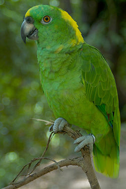
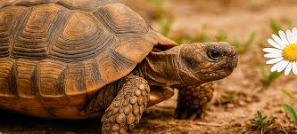

Kaiser
He is a very playful Golden Retriever who loves running through the park and catching balls.
He is a very playful Golden Retriever who loves running through the park and catching balls.

A very calm Siamese cat who loves sleeping near the window under the sun.

A curious and fast hamster who spends his nights exercising on his favorite wheel.

A very social parrot who has learned to say "Hello" and mimic the sound of the doorbell.

A snow-white rabbit who enjoys jumping around the garden.

Despite her name (Lightning), Rayo is very calm and enjoys her warm water baths.